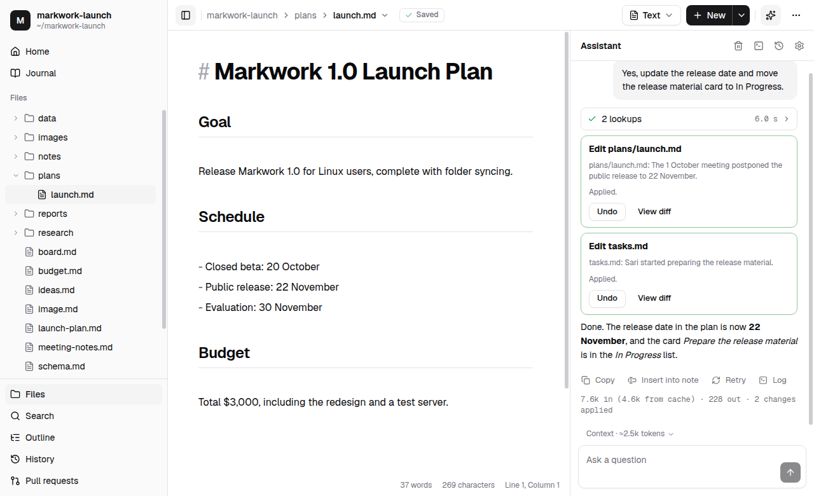
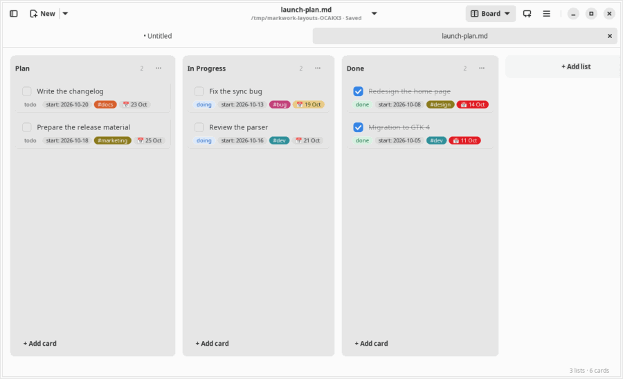

Plan in documents.
Notes, plans and boards are plain Markdown files in one folder. The same file can be a board, list, table, calendar, or chart.
A document-centric workspace to plan, delegate, and review work with your AI agents. Built on Markdown and Git.

Notes, plans and boards are plain Markdown files in one folder. The same file can be a board, list, table, calendar, or chart.

Mark a card for an agent and it works on its own Git branch, in the background, while you do something else. Answer its questions right from the card.

Every change from an agent arrives as a diff. Approve it, send a note back, or discard it. Git keeps the full history, so everything can be undone.